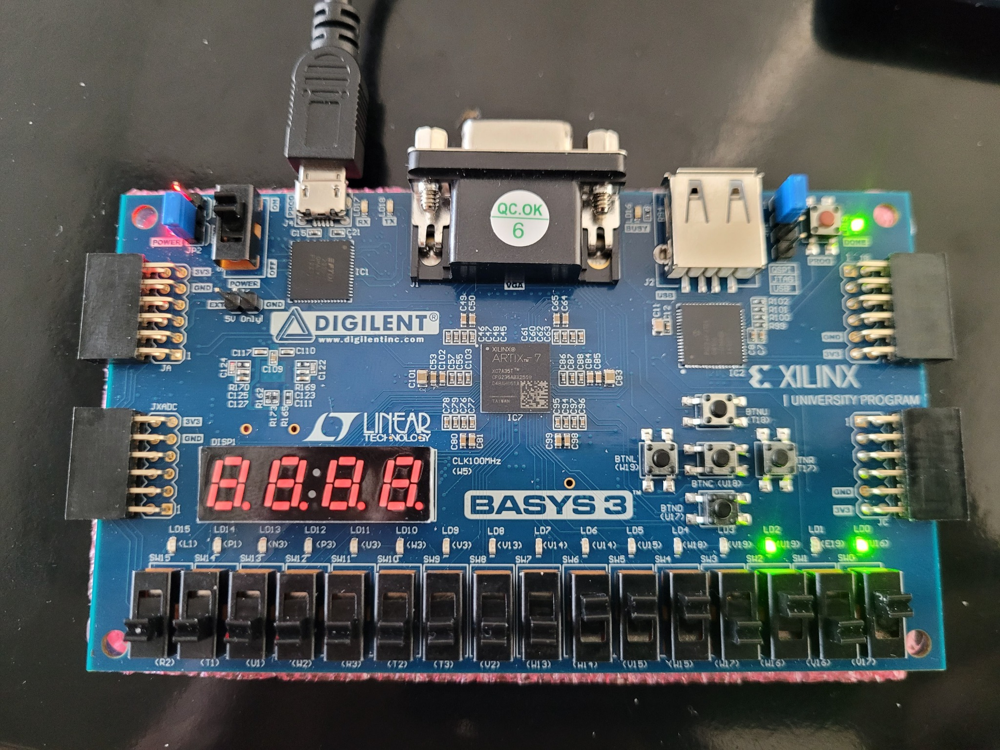
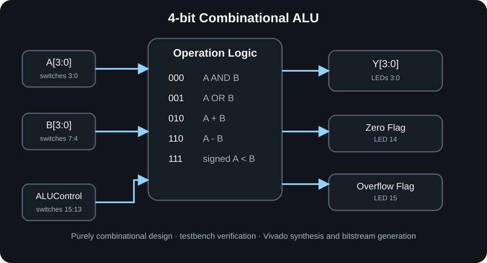
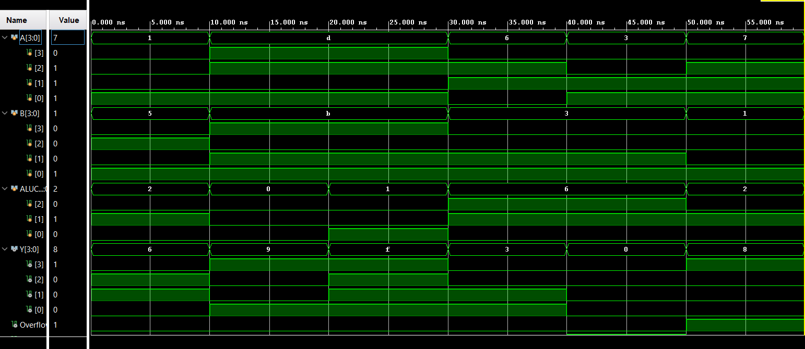
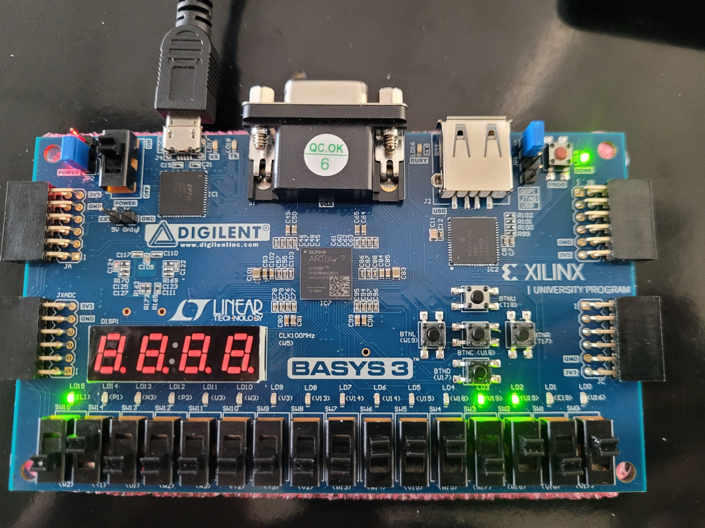
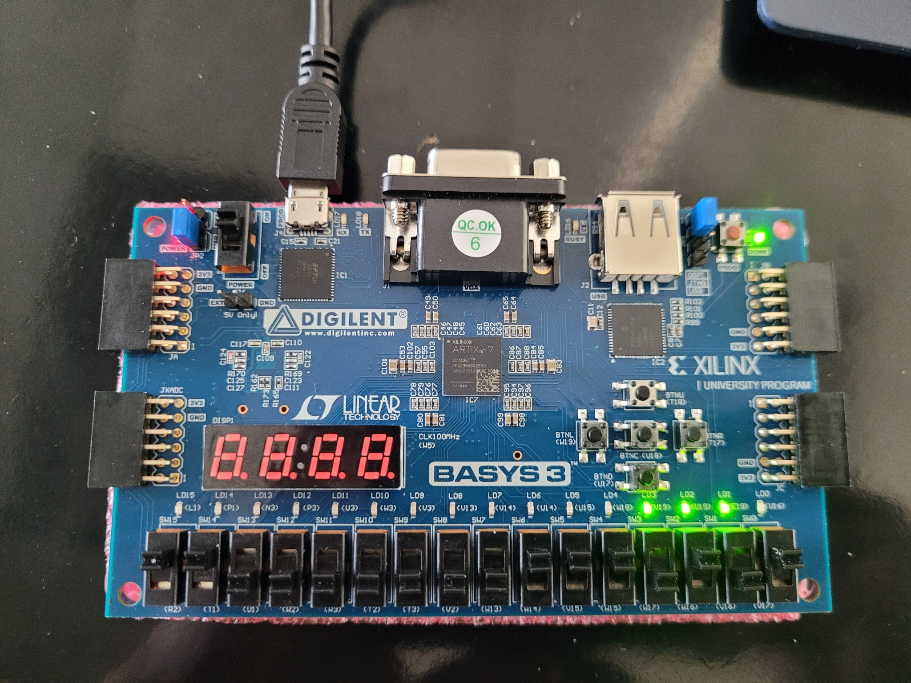
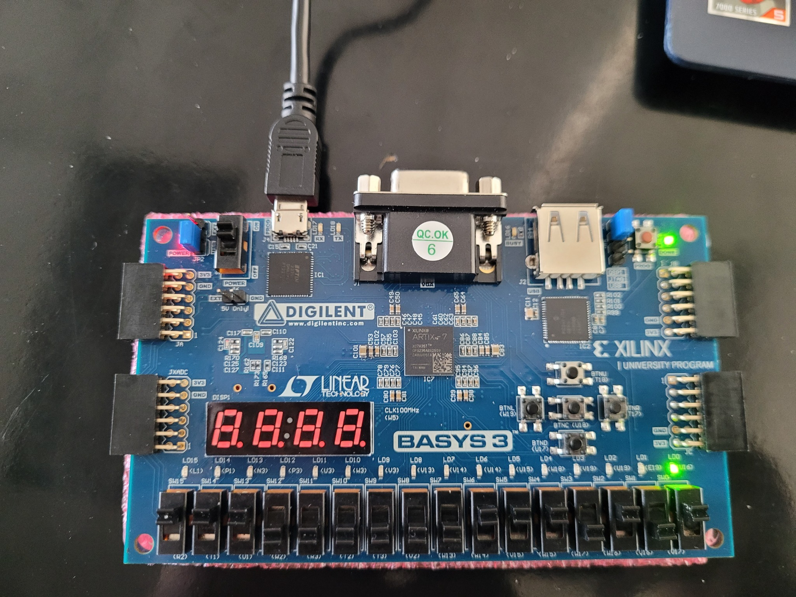
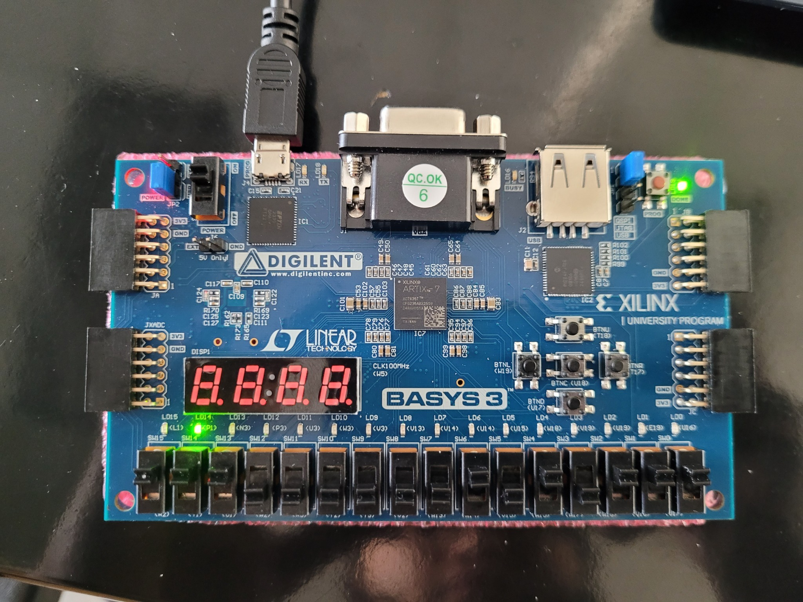
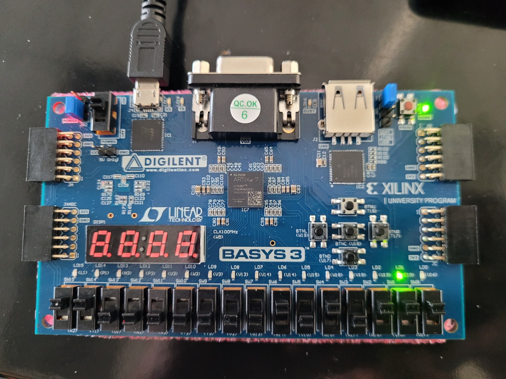

FPGA Arithmetic Logic Unit
A four-bit combinational ALU written in Verilog, verified with a testbench, synthesized in Vivado, and deployed to a Xilinx Basys 3 FPGA.

From HDL to physical I/O
The ALU accepts two four-bit operands and a three-bit control input. A top-level board wrapper maps operands and operation selection to the slide switches and maps the result, zero flag, and overflow flag to LEDs.
- Bitwise AND and OR
- Addition and subtraction
- Signed set-on-less-than
- Signed overflow detection
- Zero-result flag generation
Design Structure

Modular FPGA workflow
The project separated the ALU logic from the Basys 3 board wrapper. This kept the arithmetic and logic behavior independent from the physical switch and LED mapping.
A dedicated testbench exercised the module before synthesis. Only after the expected waveform behavior was confirmed did I generate a bitstream and test the design on hardware.
Control Encoding
| Control | Operation | Behavior |
|---|---|---|
000 | AND | Y = A & B |
001 | OR | Y = A | B |
010 | Add | Four-bit sum with signed overflow detection |
110 | Subtract | Four-bit difference with signed overflow detection |
111 | Signed SLT | Returns 1 when signed A is less than signed B |
Simulation Before Hardware

The testbench checked normal and edge cases before the FPGA was programmed.
- 1 + 5 produced 6 without overflow
- 7 + 1 produced 8 with signed overflow asserted
- 13 AND 11 produced 9
- 13 OR 11 produced 15
- 6 − 3 produced 3
- 3 − 3 produced 0 with the zero flag asserted
Basys 3 Demonstration
For the hardware demonstration, I used A = 5 and B = 7 while changing the three-bit ALU control input. Switches SW3–SW0 set operand A, SW7–SW4 set operand B, and SW15–SW13 select the operation. LEDs LD3–LD0 display the four-bit result.
000 → Result = 5.
001 → Result = 7.
010 → Result = 12.
110 → Result = 14 (1110, representing −2 in 4-bit two’s complement).
111 → Result = 1 because 5 < 7.
What the project taught me
This project connected Boolean design to the complete FPGA workflow. Writing the ALU was only one stage; verification, board integration, constraints, synthesis, bitstream generation, and physical testing were equally important.
If I built this again
I would parameterize the datapath width, add operations such as XOR and shifts, and create a self-checking testbench that compares every observed result to a calculated expected value.